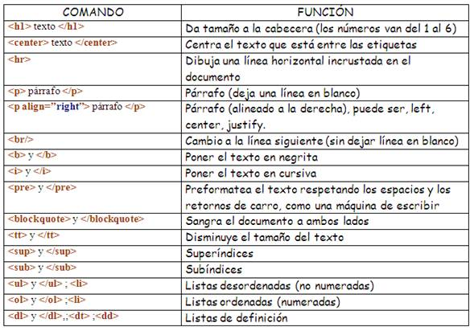

Este sitio tiene como propósito impulsar el aprendizaje de HTML, enfocado en los conceptos: Etiquetas Básicas de HTML,
atributos y valores
Etiquetas Básicas de HTML

Según IDEVIK,J. (2021). HTML es un markup language, lo que significa que está escrito con códigos que puede leer una persona sin que sea necesario compilarlo primero.
En otras palabras, el texto en una página web está «marcado» con estos códigos para dar instrucciones al navegador web sobre cómo mostrar el texto.
Estas etiquetas de marcado son las propias etiquetas HTML.
Cuando escribes código en HTML, estás escribiendo etiquetas HTML. Todas las etiquetas HTML están hechas con un número de partes específicas, incluyendo:
El carácter “menor que”
Una palabra o carácter que determina qué etiqueta se está escribiendo
Cualquier número de atributos HTML que se quiera usar, escritos de la forma nombre =”valor”
El carácter “mayor que” >
Atributos y Valores de HTML

Según www.arkaitzgarro.com/xhtml/capitulo-2.html#estructura-y-primer-documento. Los atributos básicos se utilizan en la mayoría de etiquetas HTML y XHTML, aunque adquieren mayor sentido cuando se utilizan hojas de estilo en cascada (CSS):
| Atributo | Descripción |
| id="texto" | Establece un indicador único a cada elemento |
| class="texto" | Establece la clase CSS que se aplica a los estilos del elemento |
| style="texto" | Aplica de forma directa los estilos CSS de un elemento |
| title="texto" | Establece el título del elemento (Mejora la accesibilidad) |